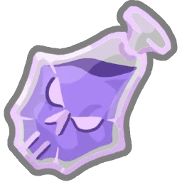
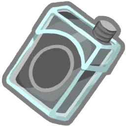
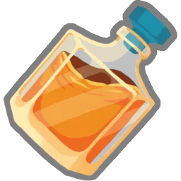
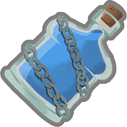

力量藥水 Strength Potion
獲得2點力量。
獲得2點力量。

造成20點傷害。

獲得5點力量。在你的這個回合結束時，失去5點力量。

從3張隨機技能牌中選擇1張加入你的手牌。這張牌在本回合可以免費打出。

從3張隨機攻擊牌中選擇1張加入你的手牌。這張牌在本回合可以免費打出。

給予33層災厄。

抽3張牌。

給予3層易傷。

獲得。

給予6層中毒。

獲得12點格擋。

從3張隨機能力牌中選擇1張加入你的手牌。這張牌在本回合可以免費打出。
獲得。

獲得2點敏捷。
獲得5點敏捷。在你的這個回合結束時，失去5點敏捷。

從3張隨機無色牌中選擇1張加入你的手牌。這張牌在本回合可以免費打出。

給予3層虛弱。

獲得2點集中。

回覆你最大生命值的20%。

對所有敵人造成10點傷害。

鑄造15。

獲得5層再生。

消耗你手牌中的任意張牌。

將你的格擋變為三倍。

抽1張牌。在你的下3個回合開始時，額外抽1張牌。

獲得。在你的下3個回合開始時，額外獲得。

獲得3點荊棘。

將3張小刀+加入你的手牌。

敵人在自身的每個回合結束時，失去9點生命。
召喚15。

獲得1點力量和1點敏捷。

獲得。抽2張牌。
在本場戰鬥中升級你手牌中的所有牌。

本回合，你打出的下一張牌會額外打出一次。

丟棄任意張牌，然後抽相同數量的牌。

給予所有敵人1層虛弱和1層易傷。

獲得2個充能球欄位。

保留你的手牌2回合。

獲得7層覆甲。

選擇你手牌中的一張牌，使其在本場戰鬥可以免費打出。

在本場戰鬥中，所有名字中有“打擊”的牌獲得重放：1。

敵人的攻擊在下4個回合中造成的傷害減少30%。

將3張升級的無色牌加入你的手牌。

獲得1層緩衝。

獲得5點最大生命值。

將2張靈魂加入你的手牌。

獲得1層儀式。

將你棄牌堆中的一張牌放入你的手牌。這張牌在本回合可以免費打出。

在所有空藥水欄位中獲得隨機藥水。

獲得10點格擋。在下個回合開始時獲得10點格擋。

當你的生命值將被減少至0或以下時，改為丟棄這瓶藥水，然後將你回覆到你最大生命值的30%。

將你的所有牌洗入你的抽牌堆。抽5張牌。
抽7張牌。在本回合隨機化你手牌中所有牌的耗能。

你打出的下一張攻擊牌將會造成三倍傷害。
生成你充能球欄位數量個黑暗充能球。

選擇你抽牌堆中的一張牌加入你的手牌。

打出你抽牌堆頂部的3張牌。
往你的手牌中加入一張隨機攻擊牌、一張隨機技能牌和一張隨機能力牌。這些牌在本回合免費。

所有敵人在這個回合失去7點力量。

獲得1層無實體。

對所有玩家和敵人造成12點傷害。 也可以投擲給商人換取100金幣。

消耗你的手牌。抽10張牌。
沒有符合條件的內容。